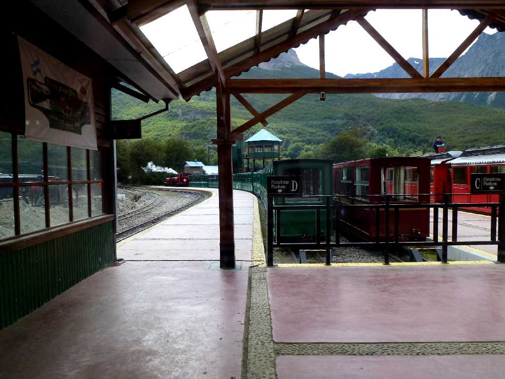
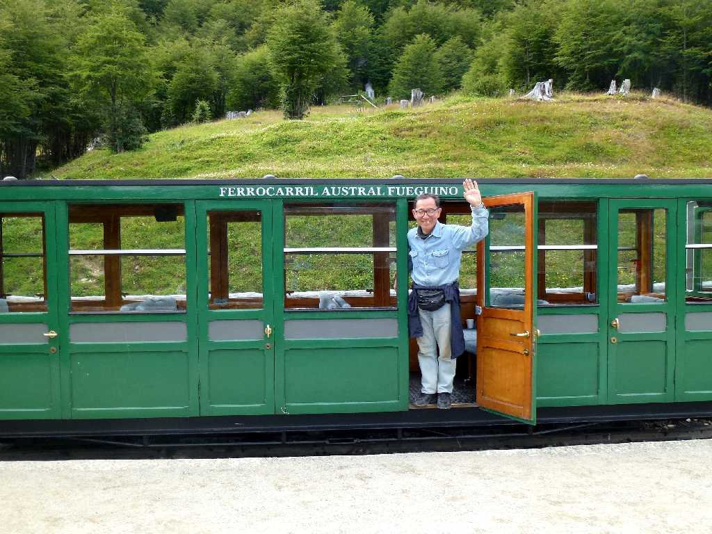
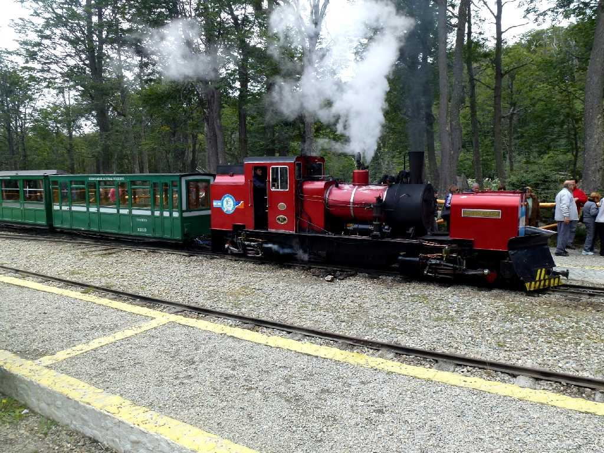

Estacion del Fin del Mundo El Tren del Fin del Mundo Tierra de Fuego Ushuaia
世界の果て鉄道の世界の果て駅

February 20 2014 Estacion Cascada La Macarena Tierra de Fuego

Estacion Parque Nacional Tierra de Fuego